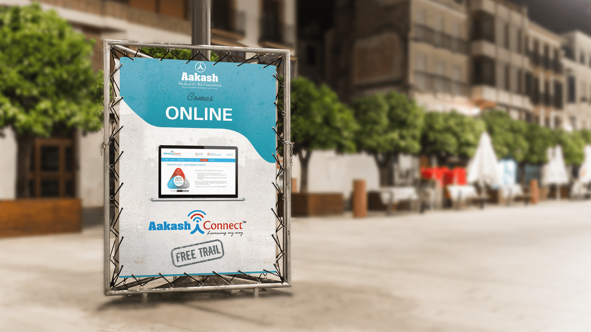
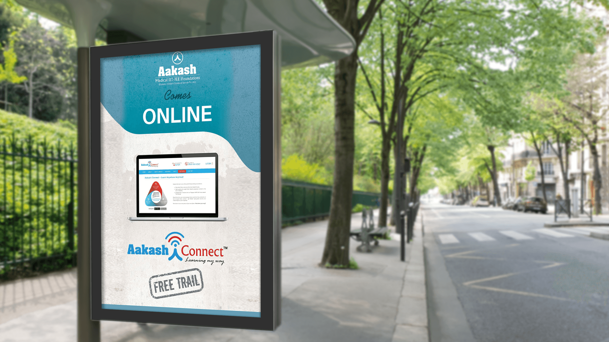

Signal Aakash’s move online without weakening the established authority of its classroom-led coaching.
← Back to workLearning.
Aakash Institute · Tent Card
Learning.
Without limits.

Project overview
A trusted classroom.
Now available anywhere.
Aakash Institute needed a focused tent card for iConnect—its “Learn Anywhere, Anytime” campaign—introducing digital access to students already familiar with its coaching expertise.
The communication had to make a new learning format feel immediate and credible while retaining the authority of a nationwide institute serving medical and engineering aspirants.
- Deliverable
- Tent Card
- Platform
- Aakash iConnect
- Message
- Learn Anywhere, Anytime
- Action
- Free Trial
The communication challenge
Make digital feel new.
Keep trust familiar.
Give students one fast reading path from the online-learning announcement to the free-trial invitation.
The organising message
Aakash comes
online.
The headline says everything in two beats: a trusted education name, followed by a decisive shift in access. It makes the digital proposition feel like a natural extension of Aakash rather than a separate product.
A laptop visual proves the experience, the iConnect identity names the platform, and the free-trial stamp converts awareness into a clear next step.
The reading path
From recognition
to participation.
Recognise
Aakash branding immediately establishes academic credibility.
Discover
“Comes Online” introduces the new mode with minimal explanation.
Understand
The laptop and iConnect mark make the digital service tangible.
Try
The free-trial device gives students a low-friction action.
The work in context
Compact communication.
Clear from a distance.
The vertical composition preserves its hierarchy across physical placements. Both supplied applications are presented without cropping so the full creative and its reading order remain visible.


The outcome
Institutional trust.
Digital convenience.
The tent-card system compressed the complete iConnect proposition into one clear encounter: Aakash expertise, online access, a visible product experience and an immediate invitation to try.
Fast recognition
The established Aakash identity leads every application.
Clear proposition
Students understand the online offer without a dense explanation.
Visible action
A prominent free trial turns interest into a practical next step.
Learn anywhere.Begin right here.
Need communication that teaches quickly?